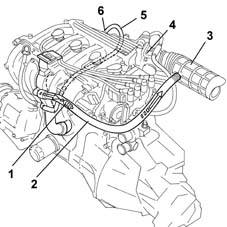
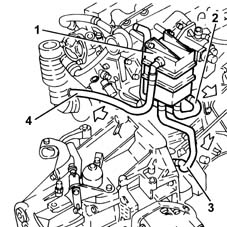
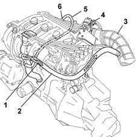

1080D crankcase vapour/gas recirculation system
- Path
- Descriptions > 10 ENGINE UNIT > 1080 EXHAUST EMISSION CONTROL SYSTEM > 1080D crankcase vapour/gas recirculation system
- Kind
- system description
- Applies to
- all engines; all production periods
- Interactive page
- https://sloeber94.github.io/elrnDB-fMltpl/en/#/2888233
Applies to: engines: 1.6 16v; all production periods
During engine operation, the oil vapours and the gases which escape through the piston seals into the crankcase are collected by a special system.
Some of the oil vapours condense and fall back into the crankcase; the remaining vapours are sent to the inlet via the pipes (2) and (5).
At idle speed, the oil vapours flow through pipe (5), and at higher loads through pipe (2). There is a spark out (1) inside the pipe (2) to prevent combustion due to flame returns from the butterfly casing (4).

1, Spark out 2, Exhaust gas main recirculation pipe 3, Air filter - butterfly casing connecting hose 4, Butterfly casing 5, Idle speed exhaust gas recirculation pipe 6, Calibrated port
Applies to: engines: 1.9 JTD 8V; all production periods
The oil vapour emissions are controlled by a separator (1) which collects the vapours released from the crankcase using the pipe (2).
The difference in temperature between the separator and the oil vapours causes partial condensation.
The condensed vapours are sent, via a pipe, to the crankcase.
The uncondensed vapours are sent, through a pipe (4), to the turbocharger air inlet hose.

Applies to: engines: 1.6 16v; all production periods; only with equipment: BIPOWER and BLUPOWER
During engine operation, the oil vapours and the gases which escape through the piston seals into the crankcase are collected by a special system.
Applies to: engines: 1.6 16v; all production periods; only with equipment: Euro 3 and BIPOWER
During engine operation, the oil vapours and the gases which escape through the piston seals into the crankcase are collected by a special system.
Applies to: engines: 1.6 16v; all production periods; only with equipment: BIPOWER and BLUPOWER
Some of the oil vapours, condensed, drop back into the crankcase; the remaining vapours are sent to the intake through pipes (2) and (5).
At idle speed, the oil vapours flow through the pipe (5); at higher engine loads through the pipe (2). There is a spark out (1) inside the pipe (2) to prevent combustion due to flame returns from the butterfly casing (4).
1, Spark out 2, Main exhaust gas recirculation pipe 3, Air filter - butterfly casing connecting hose 4, Throttle body 5, Idle speed exhaust gas recirculation pipe 6, Calibrated port
Applies to: engines: 1.6 16v; all production periods; only with equipment: Euro 3 and BIPOWER
Some of the oil vapours, condensed, drop back into the crankcase; the remaining vapours are sent to the intake through pipes (2) and (5).
At idle speed, the oil vapours flow through the pipe (5); at higher engine loads through the pipe (2). There is a spark out (1) inside the pipe (2) to prevent combustion due to flame returns from the butterfly casing (4).

1, Spark out 2, Main exhaust gas recirculation pipe 3, Air filter - butterfly casing connecting hose 4, Throttle body 5, Idle speed exhaust gas recirculation pipe 6, Calibrated port
Applies to: engines: 1.6 16v; all production periods; only with equipment: GPOWER
CONSTRUCTION FEATURES
CONSTRUCTION FEATURES
During engine operation, the oil vapours and the gases which escape through the piston seals into the crankcase are collected by a special system.
OPERATION
Some of the oil vapours, condensed, drop back into the crankcase; the remaining vapours are sent to the intake through pipes (2) and (5).
At idle speed, the oil vapours flow through the pipe (5); at higher engine loads through the pipe (2). There is a spark out (1) inside the pipe (2) to prevent combustion due to flame returns from the butterfly casing (4).
1, Spark out 2, Main exhaust gas recirculation pipe 3, Air filter - butterfly casing connecting hose 4, Throttle body 5, Idle speed exhaust gas recirculation pipe 6, Calibrated port